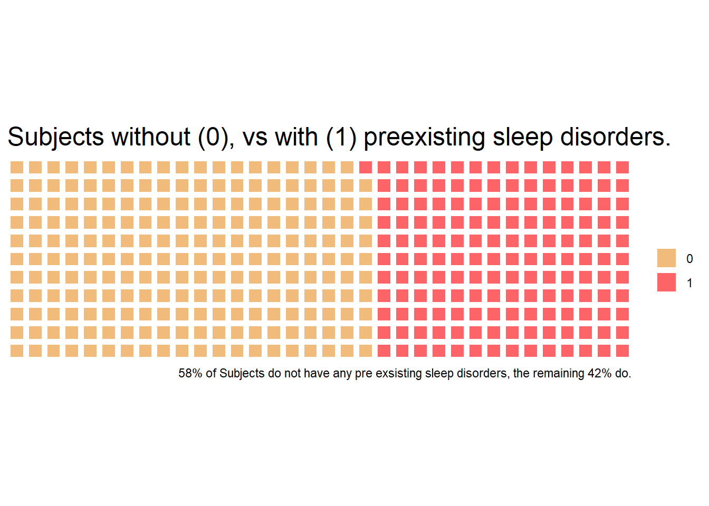
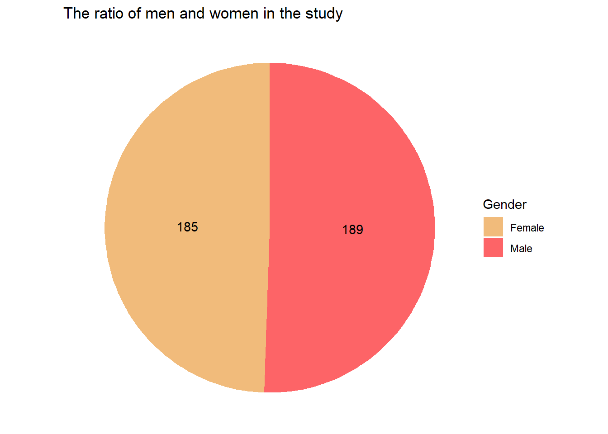
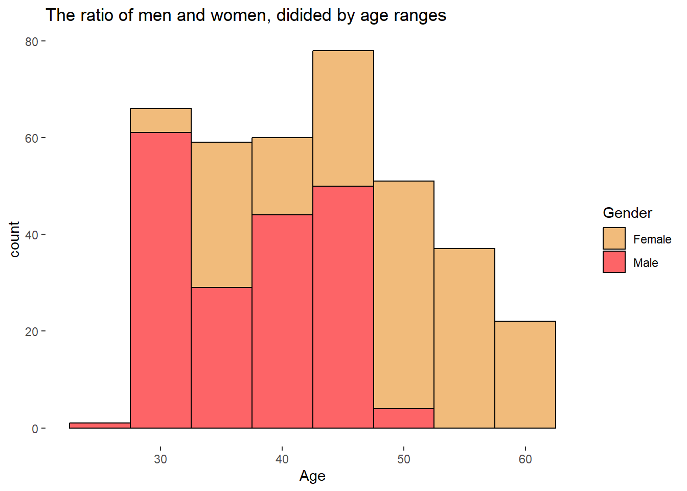
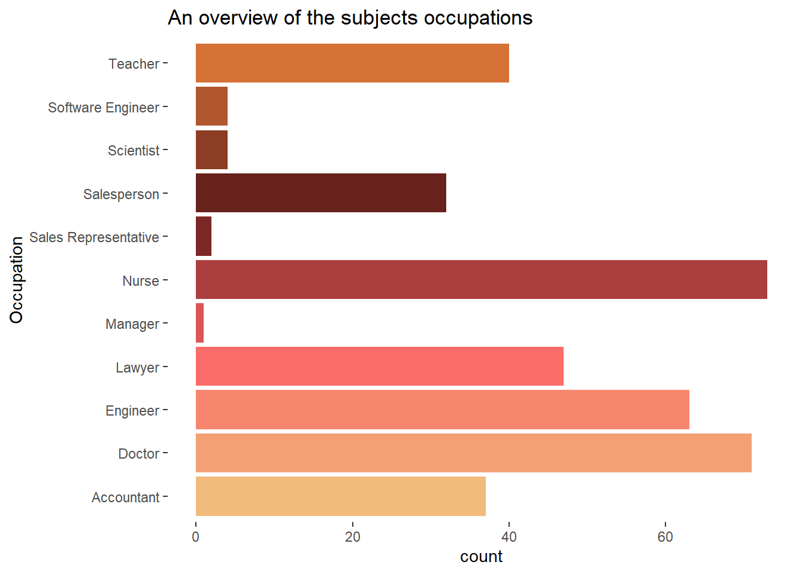
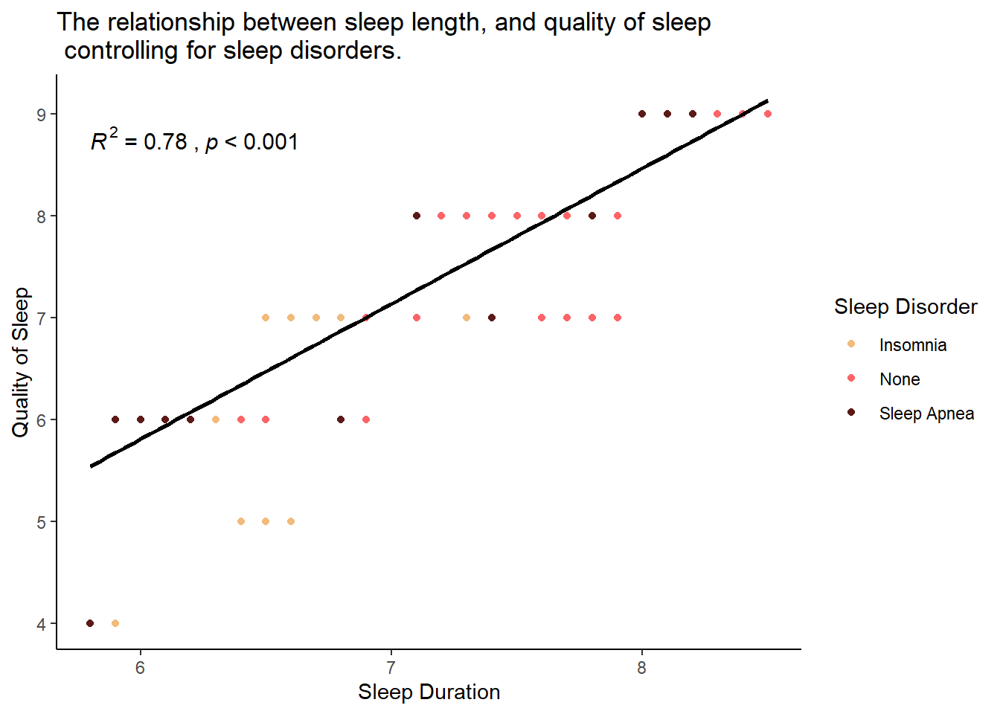

Sleep analasys
An exploratory analasys of sleep, stress and general health indicatory data.
In recent times, there has been a lot of interest in the importance of good quality sleep, as there has been a substantial influx of good quality studies on the health effects that good quality sleep, or lack there off, has on the human body and psyche. Perhaps more importantly for the public awareness of the importance of quality sleep is the book why we sleep by Mathew Walker, and the and the many podcast episodes by Huberman, where he frequently underlines the importance of quality sleep as the base layer activity one can do for ones own health and that in general no one should try to do anything else for ones health in lieu of getting quality sleep if one wishes to improve their own health.
This short report serves three different purposes:
As a means to practice my coding, analytical and reporting skills, as well as showing both employers and recruiters that I’m actually able to do the things that i claim in my resume.
As a reminder to myself, and potentially even anyone else who reads the report, that I/you should prioritize sleep as it is a determining factor for both longevity, and the overall quality of my/your life.
To fill some downtime with something practical.
First lets explore the data. To the right of this text there are visual representations of the data set. There are a total of 13 variables, including the ID for the study subjects, describing some of the health indicators for the 374 subjects. First thing worth mentioning is that the study has been run of male and female subjects, which sadly, is not something to be taken for granted, even today. On top of that, the study has been done on a good range of age groups, which is another good indicator for the quality of the study. However on closer inspection, while the ratio of males and females, and the range of ages are good, the spread of men and women across the ages leaves something to be desired. The majority of males in the study are between their late twenties to early forties, and none of the men are above their mid fifties. For the women on the other hand, the majority female subject are between the ages of their late forties and early sixties. There are no women in the studies who are in their mid twenties, and very few in their late twenties and early thirties. For the purposes of this report, this is not the most impact thing there is. I don’t expect there to be a significant difference between men and women when it comes to the health impacts of sleep for any of the reported age groups. But it will impact any models created using either gender or age as one of the factors.



The occupational background of the subject is also fairly diverse, considering the size of the study, but is biased towards occupations that require some college background. This will probably have some effect on the reported stress numbers, as the subjects are more likely to have decent salary, at least compared to non college educated individuals. A persons financial situation is a known contributor to a persons stress levels, so this it’s worth taking into consideration.
It’s also worth taking into consideration that 42% of subjects have either sleep apnea, or sleep disorder. This will most likely impact either the sleep duration, or the sleep quality (or both). I created i binary helper column, to help control for whether or not the subject has a sleeping disorder or not, to increase the accuracy of my analysis down the line.
Vissualizing the correlation between the quality and duration of sleep, with other health and wellness factors
The plot to the right visualizes the correlation between the the amount of sleep gotten (the explanatory variable), and the quality of sleep (the dependent variable). While a simple Pearson correlation analysis is by no means sufficient to make a conclusionary statement about any causal effects, I do believe it’s worth noting. And if there is a chance that improving sleep quality can be fixed easily and significantly by going to bed a bit earlier. We can also see that the quantity of sleep increases the quality of sleep for people with sleeping disorders as well, and based on the graph, to a greater degree than for people without some form of sleeping disorder, as the dots representing the subject with sleeping disorder tend to be further to the left for at any given level of sleep quality. The reason why people with sleeping disorders on average have an overall lower quality of sleep, assuming the duration of sleep determines the quality of sleep is correct, is because people with sleeping disorder tend to have fewer hours of sleep than people without any sleeping disorders.

Checking the subjects blood preassure, and how it relates to their level of stress.
In this data set, the only data point representing general health in a measured way, is the blood pressure level of the subjects. While not extensive data by any means, it is a good and easy to measure way of quantifying someones general health. Both gender and age do impact the what is expected, and considered as good, but for this analysis I will use the table from the health research institution to determine if someone ha low, optimal, normal or high blood pressure. Cardiovascular related deaths are among, or the top killer for countries across the globe, and it is reported that up to 80% of heart attacks are preventable. High blood pressure is related to cardiovascular related diseases, and so finding ways to get ones blood pressure to optimal levels should be something people strive towards.
As we can see in the table to the right, I have created a table where I split the subjects into groups based on what their blood pressure is considered to be by the health research institute. Most of the subjects find themselves within the normal range, but there are approximately 2,5 times as many people with high blood pressure than there are people who have high blood pressure. The sample leans more towards the higher range of blood pressure, which for the sake of the analysis is a good thing, as it more closely resembles the population then if the opposite had been the case.
| A Grouped overview of the subjects blood preassure levels | |
|---|---|
| Using data from the HRI to determine what levels the subjects should be considered as based on their blood pressure readings | |
| Blood Pressure | Count |
| Optimal | 41 |
| Normal | 125 |
| A bit high | 108 |
| High | 100 |
Testing the effects of sleep and age on blood pressure levels.
Let’s try modelling the effects that quality that the quality of sleep, and physical activity level has on a persons blood pressure level. To create the model, I created a new variable that puts a number value to what category (optimal, normal, a bit high or high) a persons blood pressure level is at.
| Characteristic | N | Beta | 95% CI1 | p-value |
|---|---|---|---|---|
| Sleep Duration | 374 | 0.23 | 0.11, 0.35 | <0.001 |
| Age | 374 | -0.06 | -0.07, -0.05 | <0.001 |
| 1 CI = Confidence Interval | ||||
As we can see, Sleep does significantly improve upon a persons blood pressure levels. An additional two hours improves a persons blood pressure readings to such an extent, that assuming a persons readings are not above the halfway point for any category, the person would improve one category (for instance going from normal to ideal blood pressure readings).